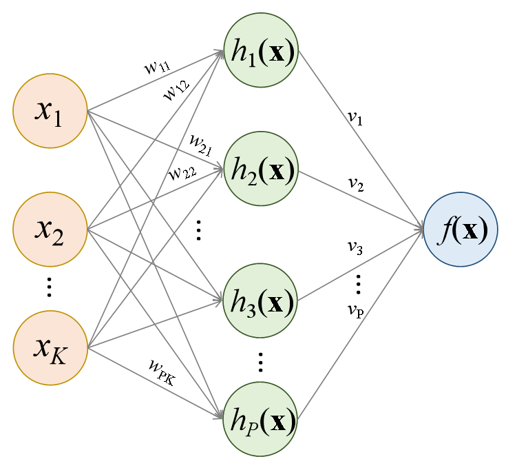
10 Redes neurais para regressão
10.1 Definições iniciais
Seja um vetor de \(K\) variáveis regressoras \(\mathbf{x}=[x_1,x_2,\ldots,x_K]^T\), uma variável dependente ou de resposta contínua, \(y \in \mathbf{R}\) e \(N\) observações de treino disponíveis, \(\{x_1,y_1\}, \{x_2,y_2\}, \ldots, \{x_N,y_N\}\).
Uma rede neural com 1 camada oculta é ilustrada na Figura 10.1. Esta rede apresenta \(K\) variáveis preditoras ou independentes na camada de entrada, \(P\) neurônios na camada oculta, \(h_1(\mathbf{x})\), \(h_2(\mathbf{x})\), …, \(h_P(\mathbf{x})\), e entrega na camada de saída o modelo \(f(\mathbf{x})\).
Começando de trás para frente, o modelo final pode ser definido a partir da Equação 10.1. \[ \begin{matrix} f(\mathbf{x})=v_0 + v_1h_1(\mathbf{x}) + v_2h_2(\mathbf{x}) + \ldots + v_Ph_P(\mathbf{x}) \\ f(\mathbf{x})=v_0 + \sum_{p=1}^Pv_ph_p(\mathbf{x}) = \mathbf{v}^T\mathbf{h} \end{matrix} \tag{10.1}\]
onde \(\mathbf{v} = [v_0, v_1, ..., v_P]^T\) é um vetor de pesos do modelo final na camada oculta e \(\mathbf{h} = [1, h_1(\mathbf{x}), ... h_P(\mathbf{x})]^T\) é um vetor de funções computadas na camada oculta. O \(p\)-ésimo termo \(h_p(\mathbf{x})\), \(p=1, ..., P\), da camada oculta é calculado conforme Equação 10.2. \[ \begin{matrix} h_p=g(w_{p0} + w_{p1}x_1 + w_{p2}x_2 + \ldots + w_{pK}x_K) \\ h_p=g(w_{p0} + \sum_{k=1}^Kw_{pk}x_k) = g(\mathbf{w}_p^T\mathbf{x})\\ \end{matrix} \tag{10.2}\]
onde \(\mathbf{w}_p = [w_{p0}, w_{p1}, \ldots, w_{pK}]^T\) é um vetor de pesos do \(p\)-ésimo neurônio na camada de entrada e \(g(z)\) é uma função de ativação a qual deve ser selecionada de forma apropriada ao tipo de problema abordado. É importante observar que tano na camada oculta quanto na camada de saída não foram ilustrados na Figura 10.1 os termos de vício \(v_0\) e \(w_{0p}\), porém são importantes e considerados no modelo. Para problemas de regressão a função de unidade linear retificada (Retified Linear Unit - ReLU) pode ser usada como ativação nas camadas ocultas, sendo esta descrita matematicamente conforme Equação 10.3.
\[ g(z) = max(0,z) = \bigg\{ \begin{matrix} 0,z<0 \\ z,z\geq0 \end{matrix} \tag{10.3}\]
A função de ativação ReLu é plotada a seguir. Uma vez que no processo de otimização dos parâmetros da rede, o gradiente da função perda em relação a tais parâmetros é computado iterativamente, a função de ativação ReLU apresenta a vantagem de ter derivada nula para valores negativos de \(z\), desativando alguns neurônios quando \(z \leq 0\), tornando os cálculos computacionais mais fáceis.
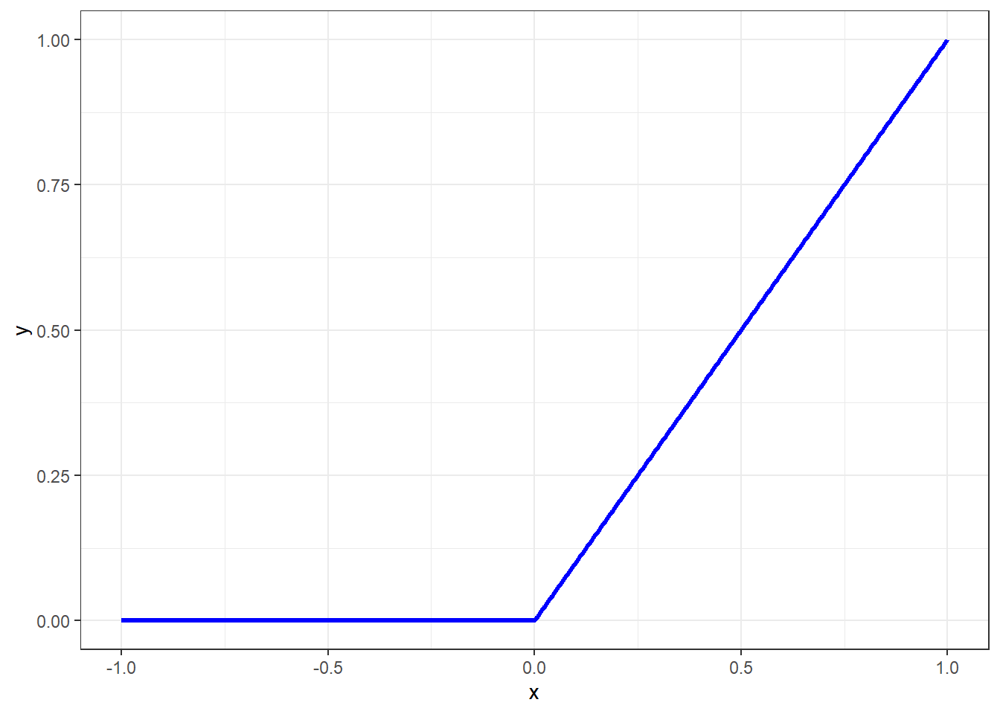
É importante esclarecer que a função ReLU deve ser utilizada em camadas ocultas, conforme a descrição matemática aqui sugere. Ademais em problemas de regressão não se usa uma função de ativação na camada de saída, ainda de acordo com a formulação aqui exposta. Oportunamente, quando o tema classificação for abordado, outras funções de ativação serão expostas, além de adaptações necessárias.
Dadas tais considerações, pode-se escrever o modelo explícito para uma rede neural com uma camada oculta conforme segue. \[ \begin{aligned} f(\mathbf{x})=v_0 + v_1.g(w_{10} + w_{11}x_1 + w_{12}x_2 + \ldots + w_{1K}x_K)\\ + v_2.g(w_{20} + w_{21}x_1 + w_{22}x_2 + \ldots + w_{2K}x_K)\\ + \ldots + v_P.g(w_{P0} + w_{P1}x_1 + w_{P2}x_2 + \ldots + w_{PK}x_K) \end{aligned} \]
Logo, \[ \begin{matrix} f(\mathbf{x})=v_0 + v_1.g(w_{10} + \sum_{k=1}^Kw_{1k}x_k) + v_2.g(w_{20} + \sum_{k=1}^Kw_{2k}x_k) + \ldots \\ + v_P.g(w_{P0} + \sum_{k=1}^Kw_{Pk}x_k) \end{matrix} \]
De forma, mais compacta, temos o modelo já exposto anteriormente. \[ \begin{matrix} f(\mathbf{x})=v_0 + \sum_{p=1}^Pv_p.g(w_{p0} + \sum_{k=1}^Kw_{pk}x_k)\\ f(\mathbf{x})=v_0 + \sum_{p=1}^Pv_ph_p(\mathbf{x}) = \mathbf{v}^T\mathbf{h}\\ \end{matrix} \]
O aprendizado profundo consiste simplesmente em uma rede neural com duas ou mais camadas ocultas.
10.2 Descida do gradiente e propagação para trás
Os parâmetros a serem estimados do modelo de rede neural consistem em \(\mathbf{v} = [v_0, v_1,v_2,\ldots,v_p]^T\) e \(\mathbf{w}_p=[w_{p0},w_{p1},w_{p2},\ldots,w_{pK}]^T\). Tomando as \(N\) observações de treino \((\mathbf{x}_i,y_i)\), \(i=1,...,N\), estima-se o modelo minimizando a função perda quadrática da Equação 10.4. \[ \min_{\{w_p\}_1^N,v} \frac{1}{2} \sum_{i=1}^{N}(y_i-f(\mathbf{x}_i))^2 \tag{10.4}\]
onde
\[ f(\mathbf{x})=v_0+\sum_{p=1}^Pv_p.g(w_{p0}+\sum_{k=1}^Kw_{pk}x_{ik}). \]
Devido a não convexidade da função perda, múltiplas soluções podem estar presentes. A otimização é realizada de forma lenta e iterativa com o algoritmo de descida do gradiente. Seja \(\mathbf{\theta}\) o vetor de todos os parâmetros da rede, \(\mathbf{\theta} = [\mathbf{v}, \mathbf{w}_0, \mathbf{w}_1, ..., \mathbf{w}_P]^T\). A fução perda pode ser reescrita conforme Equação 10.5. \[ L(\theta)=\frac{1}{2} \sum_{i=1}^{N}(y_i-f_\theta(\mathbf{x}_i))^2 \tag{10.5}\]
O algoritmo de descida do gradiente pode ser descrito a partir dos seguintes passos:
- Defina um valor inicial \(\theta_0\) para \(\theta\).
- Itere até \(L(\theta)\) parar de decrescer ou então até um critério de parada:
- Encontre um vetor \(\delta\) de forma que \(\theta_{t+1}=\theta_t+\delta\) reduza \(L(\theta)\).
- Faça \(t \leftarrow t+1\).
O valor de \(\delta\) deve ser escolhido na direção de máximo crescimento da função perda. O algoritmo de propagação para trás (backpropagation) considera o gradiente da função perda em relação aos parâmetros da rede, isto é, \[ \nabla L(\theta_t)=\frac{\partial L}{\partial \theta} \Bigg|_{\theta=\theta_t}. \]
Como \(\nabla L(\theta_t)\), que consiste no vetor de derivadas parciais de \(L\) avaliadas em \(\theta_t\), o algoritmo de descida do gradiente busca mover o vetor \(\theta\) na direção contrária do gradiente, considerando uma taxa de aprendizagem \(\rho\) pequena para facilitar a convergência, isto é, \[ \theta_{t+1} \leftarrow \theta_t - \rho \nabla L(\theta_t) \]
A propagação para trás consiste simplesmente na aplicação da regra da cadeia de diferenciação. Como \[ L(\theta)=\sum_{i=1}^NL_i(\theta)=\frac{1}{2} \sum_{i=1}^{N}(y_i-f_\theta(\mathbf{x}_i))^2 \] é uma soma, o gradiente também será uma soma em \(N\). Assim, a derivada pode ser computada termo a termo, para cada observação \(i\): \[ L_i=\frac{1}{2} (y_i-v_0-\sum_{p=1}^Pv_p.g(w_{p0}+\sum_{k=1}^Kw_{pk}x_{ik}))^2. \]
Considerando o termo \(v_p\), a derivada parcial da função perda pela regra da cadeia fica conforme segue:
\[ \frac{\partial L_i}{\partial v_p}=\frac{\partial L_i}{\partial f_\theta}\frac{\partial f_\theta}{\partial v_p} \]
\[ \frac{\partial L_i}{\partial v_p}=-(y_i-f_\theta(\mathbf{x}_i)).g(w_{p0}+\sum_{k=1}^Kw_{pk}x_{ik}). \]
Já derivando em relação ao termo \(w_{pk}\), tem-se: \[ \frac{\partial L_i}{\partial w_{pk}}=\frac{\partial L_i}{\partial f_\theta}\frac{\partial f_\theta}{\partial g(w_{p0}+\sum_{k=1}^Kw_{pk}x_{ik})}\frac{\partial g(w_{p0}+\sum_{k=1}^Kw_{pk}x_{ik})}{\partial (w_{p0}+\sum_{k=1}^Kw_{pk}x_{ik})} \frac{\partial (w_{p0}+\sum_{k=1}^Kw_{pk}x_{ik})}{\partial w_{pk}} \]
\[ \frac{\partial L_i}{\partial w_{pk}}=-(y_i-f_\theta(\mathbf{x}_i))v_pg'(w_{p0}+\sum_{k=1}^Kw_{pk}x_{ik})x_{ik}. \]
Pode-se observar que em ambos resultados das derivadas os resíduos \(y_i-f_\theta(\mathbf{x}_i)\) estão presentes. Ou seja, na diferenciação uma fração do resíduos é atribuída aos parâmetros a partir da regra da cadeia.
Dada a possibilidade de overfitting no processo de otimização dos parâmetros da rede, diversas estratégias são usadas. Por exemplo a regularização ou penalização rígida ou LASSO pode ser aplicada, sendo a função perda modificada conforme Equação 10.6 para o primeiro caso. \[ L(\theta)=\frac{1}{2} \sum_{i=1}^{N}(y_i-f_\theta(\mathbf{x}))^2 +\lambda\sum_p\theta_p^2 \tag{10.6}\]
Outra estratégia utilizada é o dropout, que consiste na remoção aleatória de uma proporção dos neurônios de uma ou mais camadas. Este processo tem, de certa forma, similaridade com a estratégia de regularização via LASSO e também com a estratégia de seleção de variáveis para o particionamento binário recursivo no algoritmo de floresta aleatória.
O processo de treinamento da rede neural envolve a definição da arquitetura da rede, isto é, o número de camadas ocultas e o número de neurônios em cada uma, além da otimização dos hiperparâmetros de encolhimento e dropout. Todos estes podem ser considerados hiperpâmetros a serem otimizados e, para tal, deve-se utilizar de validação cruzada e grid search.
Existem diversos outros tipos de redes neurais, como as redes neurais convolucionais, com grande potencial para classificação de imagens e as redes neurais recorrentes, para problemas de séries temporais, reconhecimento de fala, entre outros. O leitor é convidado a ler a bibliografia citada para mais informações.
10.3 Validação cruzada e grid search para treinar múltiplos modelos de regressão passo a passo via tidymodels
Previsão do preço de computadores.
library(Ecdat) # para dados
library(tidymodels)
library(modelsummary)
library(finetune) # para grid search
library(dplyr)
library(baguette) # bag_treeLeitura de dados.
data(Computers)
dados2 <- na.omit(Computers)Entendendo os dados.
dados2 |> glimpse()Rows: 6,259
Columns: 10
$ price <dbl> 1499, 1795, 1595, 1849, 3295, 3695, 1720, 1995, 2225, 2575, 21…
$ speed <dbl> 25, 33, 25, 25, 33, 66, 25, 50, 50, 50, 33, 66, 50, 25, 50, 50…
$ hd <dbl> 80, 85, 170, 170, 340, 340, 170, 85, 210, 210, 170, 210, 130, …
$ ram <dbl> 4, 2, 4, 8, 16, 16, 4, 2, 8, 4, 8, 8, 4, 8, 8, 4, 2, 4, 4, 8, …
$ screen <dbl> 14, 14, 15, 14, 14, 14, 14, 14, 14, 15, 15, 14, 14, 14, 14, 14…
$ cd <fct> no, no, no, no, no, no, yes, no, no, no, no, no, no, no, no, n…
$ multi <fct> no, no, no, no, no, no, no, no, no, no, no, no, no, no, no, no…
$ premium <fct> yes, yes, yes, no, yes, yes, yes, yes, yes, yes, yes, yes, yes…
$ ads <dbl> 94, 94, 94, 94, 94, 94, 94, 94, 94, 94, 94, 94, 94, 94, 94, 94…
$ trend <dbl> 1, 1, 1, 1, 1, 1, 1, 1, 1, 1, 1, 1, 1, 1, 1, 1, 1, 1, 1, 1, 1,…Estatísticas descritivas.
datasummary_skim(dados2)| Unique | Missing Pct. | Mean | SD | Min | Median | Max | Histogram | |
|---|---|---|---|---|---|---|---|---|
| price | 808 | 0 | 2219.6 | 580.8 | 949.0 | 2144.0 | 5399.0 | 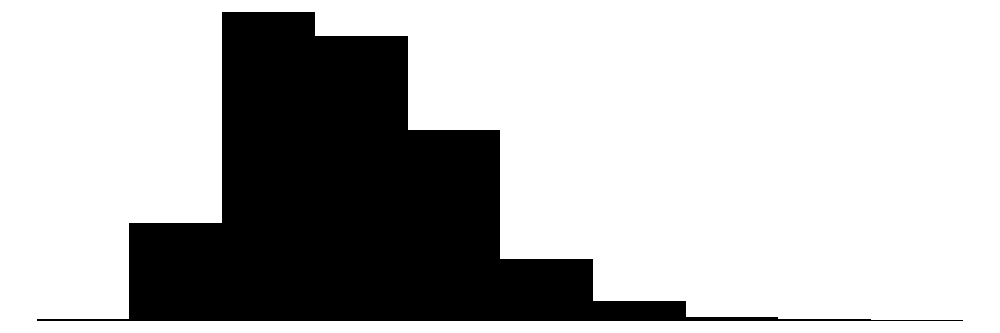 |
| speed | 6 | 0 | 52.0 | 21.2 | 25.0 | 50.0 | 100.0 | 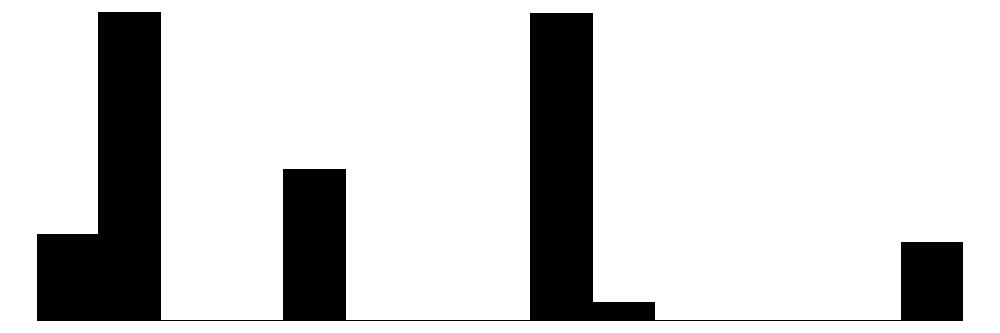 |
| hd | 59 | 0 | 416.6 | 258.5 | 80.0 | 340.0 | 2100.0 | 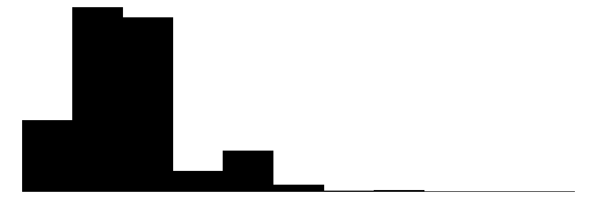 |
| ram | 6 | 0 | 8.3 | 5.6 | 2.0 | 8.0 | 32.0 | 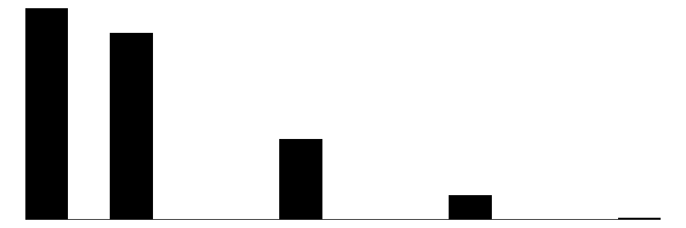 |
| screen | 3 | 0 | 14.6 | 0.9 | 14.0 | 14.0 | 17.0 | 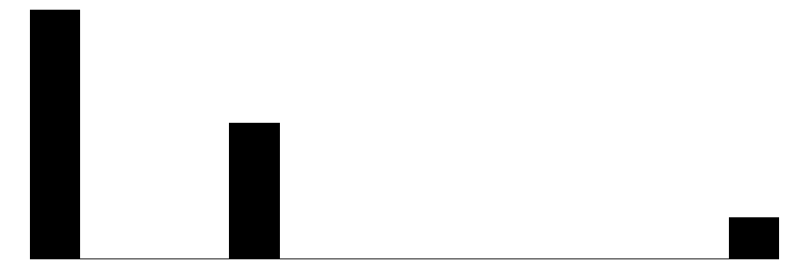 |
| ads | 34 | 0 | 221.3 | 74.8 | 39.0 | 246.0 | 339.0 | 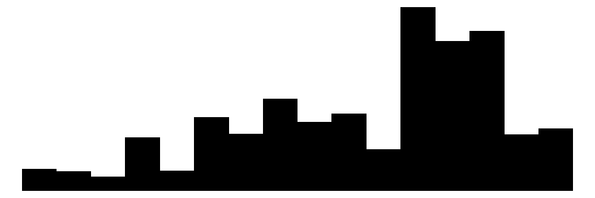 |
| trend | 35 | 0 | 15.9 | 7.9 | 1.0 | 16.0 | 35.0 | 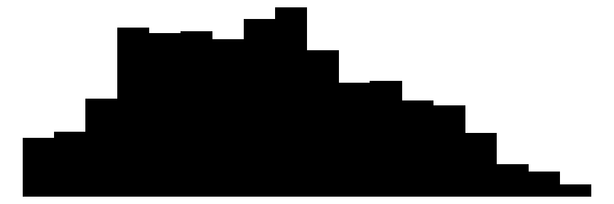 |
| N | % | |||||||
| cd | no | 3351 | 53.5 | |||||
| yes | 2908 | 46.5 | ||||||
| multi | no | 5386 | 86.1 | |||||
| yes | 873 | 13.9 | ||||||
| premium | no | 612 | 9.8 | |||||
| yes | 5647 | 90.2 |
Criando coluna com combinações das variáveis categóricas que tem níveis desbalanceados.
dados2 <- dados2 |>
mutate(multi_premium = paste(multi, premium,
sep = '_'))Separando dados de treino e teste.
set.seed(16)
dados_split2 <- initial_split(dados2,
prop = 0.25,
strata = multi_premium)
dados_train2 <- training(dados_split2)
dados_test2 <- testing(dados_split2)
set.seed(17)
dados_folds2 <-
vfold_cv(v = 10, dados_train2, repeats = 2)Definindo a receita. A receita cntém o modelo, além dos preprocessamentos realizados nas variáveis preditoras.
normalized_rec2 <-
recipe(price ~ speed + hd + ram + screen + cd + multi + premium + ads + trend,
data = dados_train2) |>
step_normalize(all_numeric_predictors()) |>
step_dummy(all_nominal_predictors()) Definindo os métodos de regressão a serem testados. Deve-se definir os hiperparâmetros a serem testados e o pacote (engine), uma vez que geralmente há várias opções de pacotes em R para um mesmo método.
linear_reg_spec <-
linear_reg(penalty = tune(), mixture = tune()) |>
set_engine("glmnet")
tree_spec <- decision_tree(tree_depth = tune(), min_n = tune(), cost_complexity = tune()) |>
set_engine("rpart") |>
set_mode("regression")
bag_cart_spec <-
bag_tree(tree_depth = tune(), min_n = tune(), cost_complexity = tune()) |>
set_engine("rpart") |>
set_mode("regression")
rforest_spec <- rand_forest(mtry = tune(), min_n = tune(), trees = tune()) |>
set_engine("ranger") |>
set_mode("regression")
xgb_spec <- # evolution of GBM
boost_tree(tree_depth = tune(), learn_rate = tune(), loss_reduction = tune(),
min_n = tune(), sample_size = tune(), trees = tune()) |>
set_engine("xgboost") |>
set_mode("regression")
svm_r_spec <-
svm_rbf(cost = tune(), rbf_sigma = tune()) |>
set_engine("kernlab") |>
set_mode("regression")
svm_p_spec <-
svm_poly(cost = tune(), degree = tune()) |>
set_engine("kernlab") |>
set_mode("regression")
mars_spec <- # method similar to GAM
mars(prod_degree = tune()) %>%
set_engine("earth") %>%
set_mode("regression")
nnet_spec <-
mlp(hidden_units = tune(), penalty = tune(), epochs = tune()) |>
set_engine("nnet", MaxNWts = 2600) |>
set_mode("regression")
nnet_param <-
nnet_spec |>
extract_parameter_set_dials() |>
update(hidden_units = hidden_units(c(1, 27)))Definindo o workflow. O workflow contém a receita e os modelos.
normalized2 <-
workflow_set(
preproc = list(normalized = normalized_rec2),
models = list(linear_reg = linear_reg_spec,
tree = tree_spec,
bagging = bag_cart_spec,
rforest = rforest_spec,
XGB = xgb_spec,
SVM_radial = svm_r_spec,
SVM_poly = svm_p_spec,
MARS = mars_spec,
neural_network = nnet_spec)
)
normalized2# A workflow set/tibble: 9 × 4
wflow_id info option result
<chr> <list> <list> <list>
1 normalized_linear_reg <tibble [1 × 4]> <opts[0]> <list [0]>
2 normalized_tree <tibble [1 × 4]> <opts[0]> <list [0]>
3 normalized_bagging <tibble [1 × 4]> <opts[0]> <list [0]>
4 normalized_rforest <tibble [1 × 4]> <opts[0]> <list [0]>
5 normalized_XGB <tibble [1 × 4]> <opts[0]> <list [0]>
6 normalized_SVM_radial <tibble [1 × 4]> <opts[0]> <list [0]>
7 normalized_SVM_poly <tibble [1 × 4]> <opts[0]> <list [0]>
8 normalized_MARS <tibble [1 × 4]> <opts[0]> <list [0]>
9 normalized_neural_network <tibble [1 × 4]> <opts[0]> <list [0]>all_workflows2 <-
bind_rows(normalized2) |>
# Make the workflow ID's a little more simple:
mutate(wflow_id = gsub("(simple_)|(normalized_)", "", wflow_id))
all_workflows2# A workflow set/tibble: 9 × 4
wflow_id info option result
<chr> <list> <list> <list>
1 linear_reg <tibble [1 × 4]> <opts[0]> <list [0]>
2 tree <tibble [1 × 4]> <opts[0]> <list [0]>
3 bagging <tibble [1 × 4]> <opts[0]> <list [0]>
4 rforest <tibble [1 × 4]> <opts[0]> <list [0]>
5 XGB <tibble [1 × 4]> <opts[0]> <list [0]>
6 SVM_radial <tibble [1 × 4]> <opts[0]> <list [0]>
7 SVM_poly <tibble [1 × 4]> <opts[0]> <list [0]>
8 MARS <tibble [1 × 4]> <opts[0]> <list [0]>
9 neural_network <tibble [1 × 4]> <opts[0]> <list [0]>Realizando grid search e validação cruzada.
race_ctrl <-
control_race(
save_pred = TRUE,
parallel_over = "everything",
save_workflow = TRUE
)
race_results2 <-
all_workflows2 |>
workflow_map(
"tune_race_anova",
seed = 1503,
resamples = dados_folds2,
grid = 25,
control = race_ctrl
)Registered S3 method overwritten by 'butcher':
method from
as.character.dev_topic genericsi Creating pre-processing data to finalize 1 unknown parameter: "mtry"
Anexando pacote: 'plotrix'O seguinte objeto é mascarado por 'package:scales':
rescale→ A | warning: A correlation computation is required, but `estimate` is constant and has 0
standard deviation, resulting in a divide by 0 error. `NA` will be returned.There were issues with some computations A: x1There were issues with some computations A: x2There were issues with some computations A: x14There were issues with some computations A: x19There were issues with some computations A: x20Extraindo métricas para avaliar os resultados da validação cruzada.
collect_metrics(race_results2) |>
filter(.metric == "rmse") |>
arrange(mean)# A tibble: 35 × 9
wflow_id .config preproc model .metric .estimator mean n std_err
<chr> <chr> <chr> <chr> <chr> <chr> <dbl> <int> <dbl>
1 XGB pre0_mod… recipe boos… rmse standard 173. 20 3.22
2 rforest pre0_mod… recipe rand… rmse standard 197. 20 3.95
3 SVM_poly pre0_mod… recipe svm_… rmse standard 213. 20 3.60
4 bagging pre0_mod… recipe bag_… rmse standard 217. 20 4.77
5 SVM_radial pre0_mod… recipe svm_… rmse standard 219. 20 4.58
6 MARS pre0_mod… recipe mars rmse standard 230. 20 3.47
7 tree pre0_mod… recipe deci… rmse standard 247. 20 5.51
8 neural_network pre0_mod… recipe mlp rmse standard 254. 20 8.69
9 neural_network pre0_mod… recipe mlp rmse standard 261. 20 5.63
10 neural_network pre0_mod… recipe mlp rmse standard 268. 20 8.79
# ℹ 25 more rowscollect_metrics(race_results2) |>
filter(.metric == "rsq") |>
arrange(desc(mean))# A tibble: 35 × 9
wflow_id .config preproc model .metric .estimator mean n std_err
<chr> <chr> <chr> <chr> <chr> <chr> <dbl> <int> <dbl>
1 XGB pre0_mod… recipe boos… rsq standard 0.912 20 0.00318
2 rforest pre0_mod… recipe rand… rsq standard 0.887 20 0.00341
3 SVM_poly pre0_mod… recipe svm_… rsq standard 0.866 20 0.00511
4 bagging pre0_mod… recipe bag_… rsq standard 0.862 20 0.00491
5 SVM_radial pre0_mod… recipe svm_… rsq standard 0.859 20 0.00515
6 MARS pre0_mod… recipe mars rsq standard 0.844 20 0.00454
7 tree pre0_mod… recipe deci… rsq standard 0.819 20 0.00802
8 neural_network pre0_mod… recipe mlp rsq standard 0.806 20 0.0147
9 neural_network pre0_mod… recipe mlp rsq standard 0.797 20 0.00968
10 neural_network pre0_mod… recipe mlp rsq standard 0.784 20 0.0152
# ℹ 25 more rowsVisualizando desempenho dos métodos.
IC_rmse2 <- collect_metrics(race_results2) |>
filter(.metric == "rmse") |>
group_by(wflow_id) |>
filter(mean == min(mean)) |>
group_by(wflow_id) |>
arrange(mean) |>
ungroup()
IC_r22 <- collect_metrics(race_results2) |>
filter(.metric == "rsq") |>
group_by(wflow_id) |>
filter(mean == max(mean)) |>
group_by(wflow_id) |>
arrange(desc(mean)) |>
ungroup()
IC2 <- bind_rows(IC_rmse2, IC_r22)
ggplot(IC2, aes(x = factor(wflow_id, levels = unique(wflow_id)), y = mean)) +
facet_wrap(~.metric, scales = "free") +
geom_point(stat="identity", aes(color = wflow_id), pch = 1) +
geom_errorbar(stat="identity", aes(color = wflow_id,
ymin=mean-1.96*std_err,
ymax=mean+1.96*std_err), width=.2) +
labs(y = "", x = "method") + theme_bw() +
theme(legend.position = "none",
axis.text.x = element_text(angle = 90, vjust = 0.5, hjust=1))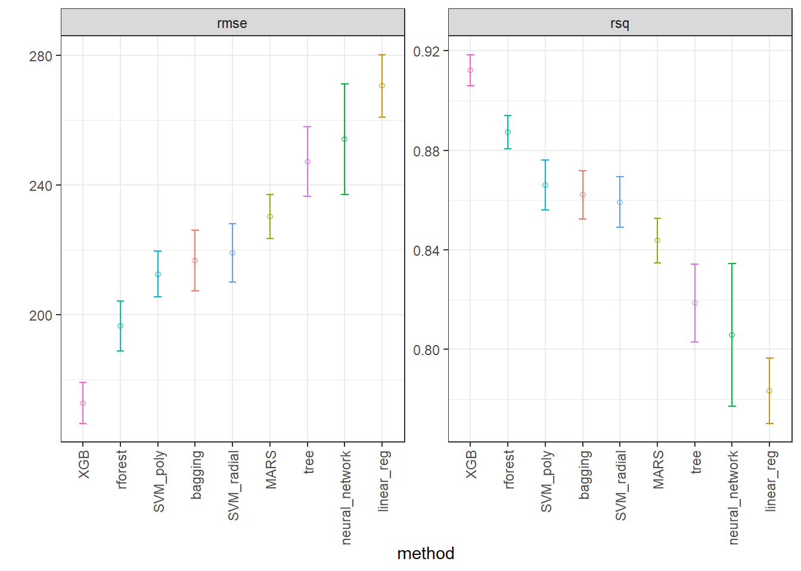
Obtendo níveis ótimos dos hiperparâmetros do melhor modelo.
best_rmse2 <-
race_results2 |>
extract_workflow_set_result("XGB") |>
select_best(metric = "rmse")
best_rmse2# A tibble: 1 × 7
trees min_n tree_depth learn_rate loss_reduction sample_size .config
<int> <int> <int> <dbl> <dbl> <dbl> <chr>
1 1416 9 5 0.0226 3.48 0.962 pre0_mod18_post0XGB_test_results <-
race_results2 |>
extract_workflow("XGB") |>
finalize_workflow(best_rmse2) |>
last_fit(split = dados_split2)
collect_metrics(XGB_test_results)# A tibble: 2 × 4
.metric .estimator .estimate .config
<chr> <chr> <dbl> <chr>
1 rmse standard 170. pre0_mod0_post0
2 rsq standard 0.915 pre0_mod0_post0Plotando previstos versus observados para os dados de teste dos dois melhores métodos.
best_rmse2_2 <-
race_results2 |>
extract_workflow_set_result("rforest") |>
select_best(metric = "rmse")
best_rmse2_2# A tibble: 1 × 4
mtry trees min_n .config
<int> <int> <int> <chr>
1 6 1167 2 pre0_mod17_post0rf_test_results <-
race_results2 |>
extract_workflow("rforest") |>
finalize_workflow(best_rmse2_2) |>
last_fit(split = dados_split2)
collect_metrics(rf_test_results)# A tibble: 2 × 4
.metric .estimator .estimate .config
<chr> <chr> <dbl> <chr>
1 rmse standard 196. pre0_mod0_post0
2 rsq standard 0.888 pre0_mod0_post0test_results2 <- rbind(XGB_test_results |>
collect_predictions(),
rf_test_results |>
collect_predictions())
test_results2$method <- c(rep("XGB", nrow(XGB_test_results |>
collect_predictions())),
rep("rforest", nrow(rf_test_results |>
collect_predictions())))
test_results2 |>
ggplot(aes(x = price, y = .pred)) +
geom_abline(color = "gray50", lty = 2) +
geom_point(alpha = 0.2) +
facet_grid(col = vars(method)) +
coord_obs_pred() +
labs(x = "observed", y = "predicted") +
theme_bw()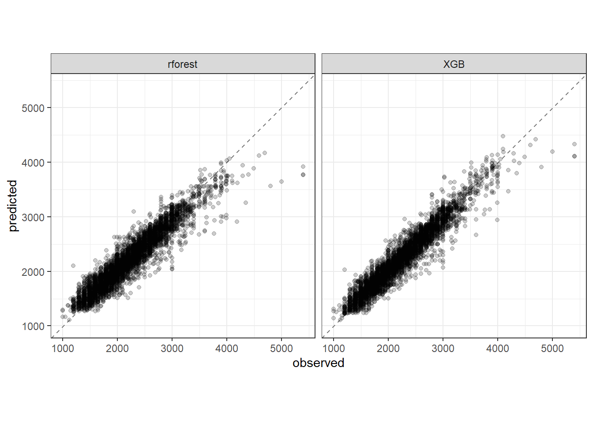
Modelo final.
XGB_final <- race_results2 |>
extract_workflow("XGB") |>
finalize_workflow(best_rmse2)
XGB_final══ Workflow ════════════════════════════════════════════════════════════════════
Preprocessor: Recipe
Model: boost_tree()
── Preprocessor ────────────────────────────────────────────────────────────────
2 Recipe Steps
• step_normalize()
• step_dummy()
── Model ───────────────────────────────────────────────────────────────────────
Boosted Tree Model Specification (regression)
Main Arguments:
trees = 1416
min_n = 9
tree_depth = 5
learn_rate = 0.0226030302714192
loss_reduction = 3.48070058842842
sample_size = 0.9625
Computational engine: xgboost Referências
Bishop, Christopher M., and Hugh Bishop. “Deep learning: foundations and concepts.” (2024).
Gareth, J., Daniela, W., Trevor, H., & Robert, T. (2013). An introduction to statistical learning: with applications in R. Spinger.